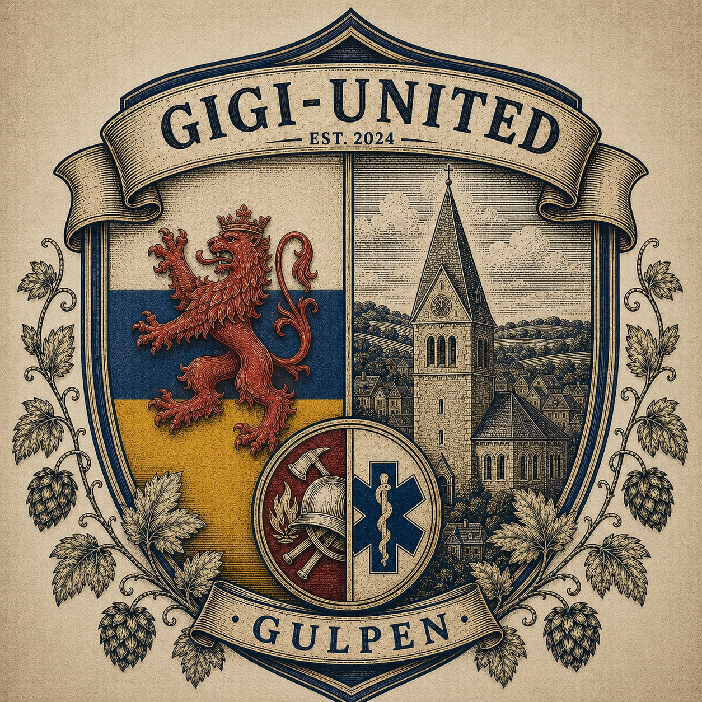

De trots van Gulpen
Gigi-United
Vanuit het Blue Rox Stadium schrijven we onze eigen voetbalgeschiedenis.
Laatste nieuws
Bekijk al het nieuws →Laatste wedstrijd
VI.997Stand VI.997
Speelronde 2Opgericht2004In het hart van Gulpen
Blue Rox Stadium12.000Onze thuishaven
RossoneriOnze trotsSamen zijn we Gigi-United
Één ambitieGroeien & winnenVandaag, morgen, altijd
Passie. Trots. Samen.Gigi-UnitedMeer dan een club

Onze identiteit
Modern op het veld.
Geworteld in Gulpen.
Het moderne logo staat voor de energie van nu. Het historische clubwapen vertelt het verhaal van Limburg, Gulpen en de hulpverleningsachtergrond van de oprichter.
Ontdek de clubOnze thuisbasis
Blue Rox Stadium
12.000 plaatsen, vier lichtmasten en midden in het Zuid-Limburgse heuvelland.